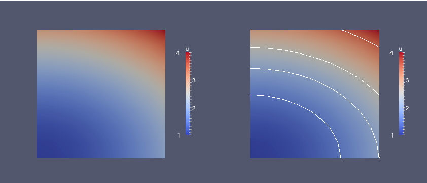

FEniCS implementation
A FEniCS program for solving our test problem for the Poisson equation in 2D with the given choices of \( u_0 \), \( f \), and \( \Omega \) may look as follows:
from fenics import *
# Create mesh and define function space
mesh = UnitSquareMesh(8, 8)
V = FunctionSpace(mesh, 'P', 1)
# Define boundary conditions
u0 = Expression('1 + x[0]*x[0] + 2*x[1]*x[1]', degree=2)
def u0_boundary(x, on_boundary):
return on_boundary
bc = DirichletBC(V, u0, u0_boundary)
# Define variational problem
u = TrialFunction(V)
v = TestFunction(V)
f = Constant(-6.0)
a = dot(grad(u), grad(v))*dx
L = f*v*dx
# Compute solution
u = Function(V)
solve(a == L, u, bc)
# Plot solution on the screen
u.rename('u', 'solution')
plot(u)
plot(mesh)
# Dump solution to file in VTK format
vtkfile = File('poisson.pvd')
vtkfile << u
# Compute error in L2 norm
error_L2norm = errornorm(u0, u, 'L2')
# Compute maximum error at vertices
vertex_values_u0 = u0.compute_vertex_values(mesh)
vertex_values_u = u.compute_vertex_values(mesh)
import numpy as np
error_vertices = np.max(np.abs(vertex_values_u0 - vertex_values_u))
# Print errors
print('error_L2norm =', error_L2norm)
print('error_vertices =', error_vertices)
# Hold plot
interactive()
The complete code can be found in the file ft01_poisson_flat.py.
Running the program
The FEniCS program must be available in a plain text file, written with a text editor such as Atom, Sublime Text, Emacs, Vim, or similar.
There are several ways to run a Python program like
ft01_poisson_flat.py:
- Use a terminal window
- Use an intergrated development environment (IDE), e.g., Spyder
- Use a Jupyter notebook
Terminal window
Open a terminal window, move to the directory containing the program and type the following command:
Terminal> python ft01_poisson_flat.py
Note that this command must be run in a FEniCS-enabled terminal. For
users of the FEniCS Docker containers, this means that you must type
this command after you have started a FEniCS session using
fenicsproject run.
When running the above command, FEniCS will run the program to compute the approximate solution \( u \). The approximate solution \( u \) will be compared to the exact solution \( \uex \) and the error in the maximum norm will be printed. Since we know that our approximate solution should reproduced the exact solution to within machine precision, this error should be small, something on the order of \( 10^{-15} \).
(AL 3: Add text here discussing what to expect in terms of plotting. Perhaps we have seamless notebook plotting working soon...)
Figure 1: Plot of the solution in the first FEniCS example.

Spyder
Many prefer to work in an integrated development environment where there is
an editor for programming, a window for executing code, a window for
inspecting objects, etc. The Spyder tool comes with all major Python
installations. Just open the file ft01_poisson_flat.py and press
the play button to run it. We refer to the Spyder tutorial to learn more
about working in the Spyder environment. Spyder is highly recommended
if you are used to working in the graphical MATLAB environment.
Jupyter notebooks
Notebooks make it possible to mix text and executable code in the same
document, but you can also just use it to run programs in a web browser.
Start jupyter notebook from a terminal window, find the New pulldown
menu in the upper right part of the GUI, choose a new notebook in
Python 2 or 3, write %load ft01_poisson_flat.py in the blank
cell of this notebook, then write Shift+Enter to execute the cell.
The file ft01_poisson_flat.py will the be loaded into the notebook.
Re-execute the cell (Shift+Enter) to run the program. You may divide the
entire program into several cells to examine intermediate results: place
the cursor where you want to split the cell and choose Edit - Split Cell.
(hpl 4: Need to describe this with more care. The first program seems to have some problems with printing the error to the notebook unless we drop the plot commands. Anyway, there should be in-browser plot commands.)
Dissection of the program
We shall now dissect this FEniCS program in detail. The program is written in the Python programming language. You may either take a quick look at the official Python tutorial to pick up the basics of Python if you are unfamiliar with the language, or you may learn enough Python as you go along with the examples in the present tutorial. The latter strategy has proven to work for many newcomers to FEniCS. This is because both the amount of abstract mathematical formalism and the amount of Python expertise that is actually needed to be productive with FEniCS is quite limited. And Python is an easy-to-learn language that you will certainly come to love and use far beyond FEniCS programming. The section Programming in Python lists some relevant Python books.
The listed FEniCS program defines a finite element mesh, a finite element function space \( V \) on this mesh, boundary conditions for \( u \) (the function \( u_0 \)), and the bilinear and linear forms \( a(u,v) \) and \( L(v) \). Thereafter, the unknown trial function \( u \) is computed. Then we can compare the numerical and exact solution as well as visualize the computed solution \( u \).
The important first line
The first line in the program,
from fenics import *
imports the key classes UnitSquareMesh, FunctionSpace, Function,
and so forth, from the FEniCS library. All FEniCS programs for
solving PDEs by the finite element method normally start with this
line.
Generating simple meshes
The statement
mesh = UnitSquareMesh(8, 8)
defines a uniform finite element mesh over the unit square \( [0,1]\times [0,1] \). The mesh consists of cells, which in 2D are triangles with straight sides. The parameters 8 and 8 specify that the square should be divided into \( 8\times 8 \) rectangles, each divided into a pair of triangles. The total number of triangles (cells) thus becomes 128. The total number of vertices in the mesh is \( 9\cdot 9=81 \). In later chapters, you will learn how to generate more complex meshes.
(hpl 5: Note that plot was made by the old partitioning \( 6\times 4 \). Probably no issue.)
Defining the finite element function space
Having a mesh, we can define a finite element function space V over
this mesh:
V = FunctionSpace(mesh, 'P', 1)
The second argument 'P' specifies the type of element, while the third
argument is the degree of the basis functions of the element. The type
of element is here "P", implying the standard Lagrange family of
elements. You may also use 'Lagrange' to specify this type of
element. FEniCS supports all simplex element families and the notation
defined in the Periodic Table of the Finite Elements [20].
The third argument 1 specifies the degree of the finite element. In
this case, the standard \( \mathsf{P}_1 \) linear Lagrange element, which
is a triangle with nodes at the three vertices. Some finite element
practitioners refer to this element as the "linear triangle". The
computed solution \( u \) will be continuous and linearly varying in \( x \)
and \( y \) over each cell in the mesh. Higher-degree polynomial
approximations over each cell are trivially obtained by increasing the
third parameter to FunctionSpace, which will then generate function
spaces of type \( \mathsf{P}_2 \), \( \mathsf{P}_3 \), and so forth.
Changing the second parameter to 'DP' creates a function
space for discontinuous Galerkin methods.
Defining the trial and test functions
In mathematics, we distinguish between the trial and test spaces \( V \)
and \( \hat{V} \). The only difference in the present problem is the
boundary conditions. In FEniCS we do not specify the boundary
conditions as part of the function space, so it is sufficient to work
with one common space V for the and trial and test functions in the
program:
u = TrialFunction(V)
v = TestFunction(V)
Defining the boundary and the boundary conditions
The next step is to specify the boundary condition: \( u=u_0 \) on \( \partial\Omega \). This is done by
bc = DirichletBC(V, u0, u0_boundary)
where u0 is an expression defining the solution values on the
boundary, and u0_boundary is a function (or object) defining
which points belong to the boundary.
Boundary conditions of the type \( u=u_0 \) are known as Dirichlet
conditions. For the present finite element method for the Poisson
problem, they are also called essential boundary conditions, as they
need to be imposed explicitly as part of the trial space (in contrast
to being defined implicitly as part of the variational formulation).
Naturally, the FEniCS class used to define Dirichlet boundary
conditions is named DirichletBC.
The variable u0 refers to an Expression object, which is used to
represent a mathematical function. The typical construction is
u0 = Expression(formula, degree=1)
where formula is a string containing the mathematical expression.
This formula is written with C++ syntax. The expression is
automatically turned into an efficient, compiled C++ function.
The second argument degree is a parameter that specifies how
the expression should be treated in computations. FEniCS will
interpolate the expression into some finite element space. It is
usually a good choice to interpolate expressions into the same
space \( V \) that is used for the trial and test functions,
but in certain cases, one may want to use a more accurate (higher
degree) representation of expressions.
The expression may depend on the variables x[0] and x[1]
corresponding to the \( x \) and \( y \) coordinates. In 3D, the expression
may also depend on the variable x[2] corresponding to the \( z \)
coordinate. With our choice of \( u_0(x,y)=1 + x^2 + 2y^2 \), the formula
string can be written as 1 + x[0]*x[0] + 2*x[1]*x[1]:
u0 = Expression('1 + x[0]*x[0] + 2*x[1]*x[1]', degree=1)
Expression object must obey C++ syntax.
Most Python syntax for mathematical expressions are also valid C++ syntax,
but power expressions make an exception: p**a must be written as
pow(p,a) in C++ (this is also an alternative Python syntax).
The following mathematical functions can be used directly
in C++
expressions when defining Expression objects:
cos, sin, tan, acos, asin,
atan, atan2, cosh, sinh, tanh, exp,
frexp, ldexp, log, log10, modf,
pow, sqrt, ceil, fabs, floor, and fmod.
Moreover, the number \( \pi \) is available as the symbol pi.
All the listed functions are taken from the cmath C++ header file, and
one may hence
consult the documentation of cmath for more information on the
various functions.
If/else tests are possible using the C syntax for inline branching. The function $$ f(x,y) = \left\lbrace\begin{array}{ll} x^2, & x, y\geq 0\\ 2, & \hbox{otherwise}\end{array}\right.$$ is implemented as
f = Expression('x[0] >= 0 && x[1] >= 0? pow(x[0], 2) : 2', degree=1)
Parameters in expression strings are allowed, but
must be initialized via keyword
arguments when creating the Expression object. For example, the
function \( f(x)=e^{-\kappa\pi^2t}\sin(\pi k x) \) can be coded as
f = Expression('exp(-kappa*pow(pi,2)*t)*sin(pi*k*x[0])', degree=1,
kappa=1.0, t=0, k=4)
At any time, parameters can be updated:
f.t += dt
f.k = 10
The function u0_boundary specifies which points that belong to the
part of the boundary where the boundary condition should be applied:
def u0_boundary(x, on_boundary):
return on_boundary
A function like u0_boundary for marking the boundary must return a
boolean value: True if the given point x lies on the Dirichlet
boundary and False otherwise. The argument on_boundary is True
if x is on the physical boundary of the mesh, so in the present
case, where we are supposed to return True for all points on the
boundary, we can just return the supplied value of on_boundary. The
u0_boundary function will be called for every discrete point in the
mesh, which allows us to have boundaries where \( u \) are known also
inside the domain, if desired.
One way to think about the specification of boundaries in FEniCS is
that FEniCS will ask you (or rather the function u0_boundary which
you have implemented) whether or not a specific point x is part of
the boundary. FEniCS already knows whether the point belongs to the
actual boundary (the mathematical boundary of the domain) and kindly
shares this information with you in the variable on_boundary. You
may choose to use this information (as we do here), or ignore it
completely.
The argument on_boundary may also be omitted, but in that case we need
to test on the value of the coordinates in x:
def u0_boundary(x):
return x[0] == 0 or x[1] == 0 or x[0] == 1 or x[1] == 1
Comparing floating-point values using an exact match test with
== is not good programming practice, because small round-off errors
in the computations of the x values could make a test x[0] == 1
become false even though x lies on the boundary. A better test is
to check for equality with a tolerance, either explicitly
def u0_boundary(x):
return abs(x[0]) < tol or abs(x[1]) < tol \
or abs((x[0] - 1) < tol or abs(x[1] - 1) < tol
or with the near command in FEniCS:
def u0_boundary(x):
return near(x[0], 0, tol) or near(x[1], 0, tol) \
or near(x[0], 1, tol) or near(x[1], 1, tol)
Defining the source term
Before defining the bilinear and linear forms \( a(u,v) \) and \( L(v) \) we have to specify the source term \( f \):
f = Expression('-6', degree=1)
When \( f \) is constant over the domain, f can be
more efficiently represented as a Constant:
f = Constant(-6)
Defining the variational problem
We now have all the ingredients we need to define the variational problem:
a = dot(grad(u), grad(v))*dx
L = f*v*dx
In essence, these two lines specify the PDE to be solved. Note the very close correspondence between the Python syntax and the mathematical formulas \( \nabla u\cdot\nabla v \dx \) and \( fv \dx \). This is a key strength of FEniCS: the formulas in the variational formulation translate directly to very similar Python code, a feature that makes it easy to specify and solve complicated PDE problems. The language used to express weak forms is called UFL (Unified Form Language) [21] [1] and is an integral part of FEniCS.
Forming and solving the linear system
Having defined the finite element variational problem and boundary condition, we can now ask FEniCS to compute the solution:
u = Function(V)
solve(a == L, u, bc)
Note that we first defined the variable u as a TrialFunction and
used it to represent the unknown in the form a. Thereafter, we
redefined u to be a Function object representing the solution;
i.e., the computed finite element function \( u \). This redefinition of
the variable u is possible in Python and often done in FEniCS
applications for linear problems. The two types of objects that u
refers to are equal from a mathematical point of view, and hence it is
natural to use the same variable name for both objects.
Plotting the solution
Once the solution has been computed, it can be visualized by
the plot() command:
plot(u)
plot(mesh)
interactive()
Clicking on Help or typing h in the plot windows brings up a list
of commands. For example, typing m brings up the mesh. With the
left, middle, and right mouse buttons you can rotate, translate, and
zoom (respectively) the plotted surface to better examine what the
solution looks like. You must click Ctrl+q to kill the plot window
and continue execution beyond the command interactive()`. In the
example program, we have therefore placed the call to interactive()
at the very end. Alternatively, one may use the command plot(u,
interactive=True) which again means you can interact with the plot
window and that execution will be halted until the plot window is
closed.
Figure 1 displays the resulting \( u \) function.
Exporting and post-processing the solution
It is also possible to dump the computed solution to file for post-processing, e.g., in VTK format:
vtkfile = File('poisson.pvd')
vtkfile << u
The poisson.pvd file can now be loaded into any front-end to VTK, in
particular ParaView or VisIt. The plot() function is intended for
quick examination of the solution during program development. More
in-depth visual investigations of finite element solutions will
normally benefit from using highly professional tools such as ParaView
and VisIt.
Prior to plotting and storing solutions to file it is wise to
give u a proper name by u.rename('u', 'solution'). Then
u will be used as name in plots (rather than the more cryptic
default names like f_7).
Once the solution has been stored to file, it can be opened in
Paraview by choosing File - Open. Find the file poisson.pvd, and
click the green Apply button to the left in the GUI. A 2D color plot
of \( u(x,y) \) is then shown. You can save the figure to file by File -
Export Scene... and choosing a suitable filename. For more
information about how to install and use Paraview, see the
http://www.paraview.org/.
Figure 2: Visualization of test problem in ParaView, with contour lines added in the right plot.

Computing the error
Finally, we compute the error to check the accuracy of the solution.
We do this by comparing the finite element solution u with the exact
solution u0, which in this example happens to be the same as the
Expression used to set the boundary conditions. We compute the error
in two different ways. First, we compute the \( L^2 \) norm of the error,
defined by
$$ E = \sqrt{\int_\Omega (u_0 - u)^2\dx}\tp$$ Since the exact solution is quadratic and the finite element solution is piecewise linear, this error will be nonzero. To compute this error in FEniCS, we simply write
error_L2norm = errornorm(u0, u, 'L2')
The errornorm() function can also compute other error norms such
as the \( H^1 \) norm. Type pydoc fenics.errornorm in a terminal window
for details.
We also compute the maximum value of the error at all the vertices of
the finite element mesh. As mentioned above, we expect this error to
be zero to within machine precision for this particular example. To
compute the error at the vertices, we first ask FEniCS to compute the
value of both u0 and u at all vertices, and then subtract the
results:
vertex_values_u0 = u0.compute_vertex_values(mesh)
vertex_values_u = u.compute_vertex_values(mesh)
import numpy as np
error_vertices = np.max(np.abs(vertex_values_u0 - vertex_values_u))
We have here used maximum and absolute value functions from numpy,
because these are much more efficient for large arrays (a factor of 30)
than Python's built-n max and abs functions.
Degrees of freedom and vertex values
A finite element function like \( u \) is expressed as a linear combination
of basis functions \( \phi_j \), spanning the space \( V \):
$$
\begin{equation}
u = \sum_{j=1}^N U_j \phi_j \tag{2.13}\tp
\end{equation}
$$
By writing solve(a == L, u, bc) in the program, a linear system will
be formed from \( a \) and \( L \), and this system is solved for the
\( U_1,\ldots,U_N \) values. The \( U_1,\ldots,U_N \) values are known as the
degrees of freedom ("dofs") or nodal values of \( u \). For Lagrange
elements (and many other element types) \( U_j \) is simply the value of
\( u \) at the node with global number \( j \). The location of the nodes and
cell vertices coincide for linear Lagrange elements, while for
higher-order elements there are additional nodes associated with the
facets, edges and sometimes also the interior of cells.
Having u represented as a Function object, we can either evaluate
u(x) at any point x in the mesh (expensive operation!), or we can
grab all the degrees of freedom values \( U \) directly by
u_nodal_values = u.vector()
The result is a Vector object, which is basically an encapsulation
of the vector object used in the linear algebra package that is used
to solve the linear system arising from the variational problem.
Since we program in Python it is convenient to convert the Vector
object to a standard numpy array for further processing:
u_array = u_nodal_values.array()
With numpy arrays we can write MATLAB-like code to analyze the
data. Indexing is done with square brackets: u_array[j], where the
index j always starts at 0. If the solution is computed with
piecewise linear Lagrange elements (\( \mathsf{P}_1 \)), then the size of
the array u_array is equal to the number of vertices, and each
u[j] is the value at some vertex in the mesh. However, the degrees
of freedom are not necessarily numbered in the same way as the
vertices of the
mesh, see the section Writing out the discrete solution for details.
If we therefore want to know the values at the vertices, we need to
call the function u.compute_vertex_values(). This function returns
the values at all the vertices of the mesh as a numpy array with the same
numbering as for the vertices of the mesh, for example:
u_vertex_values = u.compute_vertex_values()
Note that u_array and u_vertex_values are arrays of the same
length and containing the same values, albeit in different order.
Deflection of a membrane
(AL 6: I AM HERE)
The previous problem and code targeted a simple test problem where we can easily verify the implementation. Now we turn the attention to a more physically relevant problem, in a non-trivial geometry, and that results in solutions of somewhat more exciting shape.
We want to compute the deflection \( D(x,y) \) of a two-dimensional, circular membrane, subject to a load \( p \) over the membrane. The appropriate PDE model is $$ \begin{equation} -T\nabla^2 D = p(x,y)\quad\hbox{in }\Omega = \{ (x,y)\,\vert\, x^2+y^2\leq R\}\tp \tag{2.14} \end{equation} $$ Here, \( T \) is the tension in the membrane (constant), and \( p \) is the external pressure load. The boundary of the membrane has no deflection, implying \( D=0 \) as boundary condition. A localized load can be modeled as a Gaussian function: $$ \begin{equation} p(x,y) = {A\over 2\pi\sigma}\exp{\left( - {1\over2}\left( {x-x_0\over\sigma}\right)^2 - {1\over2}\left( {y-y_0\over\sigma}\right)^2 \right)}\, . \tag{2.15} \end{equation} $$ The parameter \( A \) is the amplitude of the pressure, \( (x_0,y_0) \) the localization of the maximum point of the load, and \( \sigma \) the "width" of \( p \).
Scaling
The localization of the pressure, \( (x_0,y_0) \), is for simplicity set to \( (0, R_0) \). There are many physical parameters in this problem, and we can benefit from grouping them by means of scaling. Let us introduce dimensionless coordinates \( \bar x = x/R \), \( \bar y = y/R \), and a dimensionless deflection \( w=D/D_c \), where \( D_c \) is a characteristic size of the deflection. Introducing \( \bar R_0=R_0/R \), we get $$ \frac{\partial^2 w}{\partial\bar x^2} + \frac{\partial^2 w}{\partial\bar y^2}= \alpha \exp{\left( - \beta^2(\bar x^2 + (\bar y-\bar R_0)^2)\right)}\hbox{ for } \bar x^2 + \bar y^2 < 1,$$ where $$ \alpha = \frac{R^2A}{2\pi T D_c\sigma},\quad\beta = \frac{R}{\sqrt{2}\sigma}\tp$$ With an appropriate scaling, \( \bar w \) and its derivatives are of size unity, so the left-hand side of the scaled PDE is about unity in size, while the right-hand side has \( \alpha \) as its characteristic size. This suggest choosing \( \alpha \) to be unity, or around unit. We shall in particular choose \( \alpha=4 \). With this value, the solution is \( w(\bar x,\bar y) = 1-\bar x^2 - \bar y^2 \). (One can also find the analytical solution in scaled coordinates and show that the maximum deflection \( D(0,0) \) is \( D_c \) if we choose \( \alpha=4 \) to determine \( D_c \).) With \( D_c=AR^2/(8\pi\sigma T) \) and dropping the bars we get the scaled problem $$ \begin{equation} \nabla^2w = 4\exp{\left( - \beta^2(x^2 + (y-R_0)^2)\right)}, \tag{2.16} \end{equation} $$ to be solved over the unit circle with \( w=0 \) on the boundary. Now there are only two parameters to vary: the dimensionless extent of the pressure, \( \beta \), and the localization of the pressure peak, \( R_0\in [0,1] \). As \( \beta\rightarrow 0 \), we have a special case with solution \( w=1-x^2-y^2 \).
Given a computed \( w \), the physical deflection is given by $$ D = \frac{AR^2}{8\pi\sigma T}w\tp$$
Just a few modifications are necessary in our previous program to solve this new problem.
Defining the mesh
A mesh over the unit circle can be created by the mshr tool in
FEniCS:
from mshr import *
domain = Circle(Point(0.0, 0.0), 1.0)
n = 20
mesh = generate_mesh(domain, n)
plot(mesh, interactive=True)
The Circle shape from mshr takes the center and radius of the circle
as the two first arguments, while n is the resolution, here the
suggested number of cells per radius.
Defining the load
The right-hand side pressure function
is represented by an Expression object. There
are two physical parameters in the formula for \( f \) that enter the
expression string and these parameters must have their values set
by keyword arguments:
beta = 8
R0 = 0.6
p = Expression(
'4*exp(-pow(beta,2)*(pow(x[0], 2) + pow(x[1]-R0, 2)))',
beta=beta, R0=R0)
The coordinates in Expression objects must be a vector
with indices 0, 1, and 2, and with the name x. Otherwise
we are free to introduce names of parameters as long as these are
given default values by keyword arguments. All the parameters
initialized by keyword arguments can at any time have their
values modified. For example, we may set
p.beta = 12
p.R0 = 0.3
Variational form
We may introduce w instead of u as primary unknown and p instead
of f as right-hand side function:
w = TrialFunction(V)
v = TestFunction(V)
a = dot(grad(w), grad(v))*dx
L = p*v*dx
w = Function(V)
solve(a == L, w, bc)
Visualization
It would be of interest to visualize \( p \) along with \( w \) so that we can
examine the pressure force and the membrane's response. We must then
transform the formula (Expression) to a finite element function
(Function). The most natural approach is to construct a finite
element function whose degrees of freedom are calculated from
\( p \). That is, we interpolate \( p \):
p = interpolate(p, V)
Note that the assignment to p destroys the previous Expression
object p, so if it is of interest to still have access to this
object, another name must be used for the Function object returned
by interpolate.
We can now plot w and p on the screen
as well as dump the fields to file in VTK format:
plot(w, title='Deflection')
plot(p, title='Load')
vtkfile1 = File('membrane_deflection.pvd')
vtkfile1 << w
vtkfile2 = File('membrane_load.pvd')
vtkfile2 << p
Figure 3 shows the result of the plot commands.
Figure 3: Load (left) and resulting deflection (right) of a circular membrane.

Curve plots through the domain
The best way to compare the load and the deflection is to make a curve plot
along the line \( x=0 \). This is just a matter of defining a set of points
along the line and evaluating the finite element functions w and p
at these points:
# Curve plot along x=0 comparing p and w
import numpy as np
import matplotlib.pyplot as plt
tol = 1E-8 # Avoid hitting points outside the domain
y = np.linspace(-1+tol, 1-tol, 101)
points = [(0, y_) for y_ in y] # 2D points
w_line = np.array([w(point) for point in points])
p_line = np.array([p(point) for point in points])
plt.plot(y, 100*w_line, 'r-', y, p_line, 'b--') # magnify w
plt.legend(['100 x deflection', 'load'], loc='upper left')
plt.xlabel('y'); plt.ylabel('$p$ and $100u$')
(Remember a plt.show() at the end to show the plot on the screen.)
The resulting curve plot appears in Figure 4.
It is seen how the localized input (\( p \)) is heavily damped and smoothened in
the output (\( w \)). This reflects a typical property of the Poisson equation.
Figure 4: Comparison of membrane load and deflection.

Running ParaView
ParaView is a very strong and well-developed tool for visualizing scalar and vector fields, including those computed by FEniCS.
Our program file writes \( w \) and \( p \) to file as finite element
functions. The default filenames are membrane_deflection.pvd for
\( w \) and membrane_load.vtu for \( p \). These files are in VTK format
and their data can be visualized in ParaView.
- Start the ParaView application.
- Open a file with File - Open.... You will see a list of
.pvdand.vtufiles. More specifically you seemembrane_deflection.pvd. Choose this file. - Click on Apply to the left (Properties pane) in the GUI, and ParaView will visualize the contents of the file, here as a color image.
- To get rid of the axis in the lower left corner of the plot area and axis cross in the middle of the circle, find the Show Orientation Axis and Show Center buttons to the right in the second row of buttons at the top of the GUI. Click on these buttons to toggle axis information on/off.
- If you want a color bar to explain the mapping between \( w \) values and colors, go to the Color Map Editor in the right of the GUI and use the Show/hide color legend button. Alternatively, find Coloring in the lower left part of the GUI, and toggle the Show button.
- The color map, by default going from blue (low values) to red (high values), can easily be changed. Find the Coloring menu in the left part of the GUI, click Edit, then in the Color Map Editor double click at the left end of the color spectrum and choose another color, say yellow, then double click at the right and of the spectrum and choose pink, scroll down to the bottom of the dialog and click Update. The color map now goes from yellow to pink.
- To save the plot to file, click on File - Export Scene..., fill in a filename, and save. See Figure 5 (middle).
- To change the background color of plots, choose Edit - Settings..., Color tab, click on Background Color, and choose it to be, e.g., white. Then choose Foreground Color to be something different.
- To plot the mesh with colors reflecting the size of \( w \), find the Representation drop down menu in the left part of the GUI, and replace Surface by Wireframe.
- To overlay a surface plot with a wireframe plot, load \( w \) and plot
as surface, then load \( w \) again and plot as wireframe. Make sure
both icons in the Pipeline Browser in the left part of the GUI
are on for the
membrane_deflection.pvdfiles you want to display. See Figure 5 (left). - Redo the surface plot. Then we can add some contour lines. Press the semi-sphere icon in the third row of buttons at the top of the GUI (the so-called filters). A set of contour values can now be specified at in a dialog box in the left part of the GUI. Remove the default contour (0.578808) and add 0.01, 0.02, 0.03, 0.04, 0.05. Click Apply and see an overlay of white contour lines. In the Pipeline Browser you can click on the icons to turn a filter on or off.
- Divide the plot window into two, say horizontally, using the top right
small icon. Choose the 3D View button. Open a new file and load
memberane_load.pvd. Click on Apply to see a plot of the load.
Figure 5: Default visualizations in ParaView: deflection (left, middle) and pressure load (right).

A particularly useful feature of ParaView is that you can record GUI clicks (Tools - Start/Stop Trace) and get them translated to Python code. This allows you automate the visualization process. You can also make curve plots along lines through the domain, etc.
For more information, we refer to The ParaView Guide [22] (free PDF available) and to the ParaView tutorial as well as an instruction video.
Using the built-in visualization tool
This section explains some useful visualization features of the
built-in visualization tool in FEniCS. The plot command applies the
VTK package to visualize finite element functions in a very quick and
simple way. The command is ideal for debugging, teaching, and initial
scientific investigations. The visualization can be interactive, or
you can steer and automate it through program statements. More
advanced and professional visualizations are usually better created
with advanced tools like Mayavi, ParaView, or VisIt.
The plot function can take additional arguments, such as
a title of the plot, or a specification of a wireframe plot (elevated mesh)
instead of a colored surface plot:
plot(mesh, title='Finite element mesh')
plot(w, wireframe=True, title='Solution')
Axes can be turned on by the axes=True argument, while
interactive=True makes the program hang at the plot command - you have
to type q in the plot window to terminate the plot and continue execution.
The left mouse button is used to rotate the surface, while the right
button can zoom the image in and out. Point the mouse to the Help
text down in the lower left corner to get a list of all the keyboard
commands that are available.
The plots created by pressing p or P are stored in filenames
having the form dolfin_plot_X.png or dolfin_plot_X.pdf, where X
is an integer that is increased by one from the last plot that was
made. The file stem dolfin_plot_ can be set to something more
suitable through the hardcopy_prefix keyword argument to the plot
function, for instance, plot(f, hardcopy_prefix='pressure').
Plots stored in PDF format need to be rotated 90 degrees before
inclusion in documents. This can be done by the convert -rotate 90
command (from the ImageMagick utility), but the resulting file has
then no more high-resolution PDF vector graphics. A better solution
is therefore to use pdftk to preserve the vector graphics:
Terminal> pdftk dolfin_plot_1.pdf cat 1-endnorth output out.pdf
For making plots in batch, we can do the following:
viz_w = plot(w, interactive=False)
viz_w.elevate(-10) # adjust (lift) camera from the default view
viz_w.plot(w) # bring new settings into action
viz_w.write_png('deflection') # make deflection.png
viz_w.write_pdf('deflection') # make deflection.pdf
# Rotate pdf file (right) from landscape to portrait
import os
os.system('pdftk deflection.pdf cat 1-endnorth output w.pdf')
The ranges of the color scale can be set by the range_min and range_max
keyword arguments to plot. The values must be float objects. These
arguments are important to keep fixed for animations in time-dependent
problems.
Figure 6: Plot of the deflection of a membrane.

Exercise 1: Visualize a solution in a cube
Solve the problem \( -\nabla^2 u = f \) on the unit cube \( [0,1]\times[0,1]\times [0,1] \) with \( u_0 = 1 + x^2 + 2y^2 - 4z^2 \) on the boundary. Visualize the solution. Explore both the built-in visualization tool and ParaView.
As hinted by the filename in this exercise,
a good starting point is the solver function in
the program ft04_poisson_func.py, which solves the corresponding 2D
problem. Only two lines in the body of solver needs to be changed (!):
mesh = .... Replace this line with
mesh = UnitCubeMesh(Nx, Ny, Nz)
and add Nz as argument to solver. We implement the new \( u_0 \) function
in application_test and realize that the proper \( f(x,y,z) \) function
in this new case is 2.
u0 = Expression('1 + x[0]*x[0] + 2*x[1]*x[1] - 4*x[2]*x[2]')
f = Constant(2.0)
u = solver(f, u0, 6, 4, 3, 1)
The numerical solution is without approximation errors so we can
reuse the unit test from 2D, but it needs an extra Nz parameter.
The variation in \( u \) is only quadratic so a coarse mesh is okay for visualization. Below is plot from the ParaView (left) and the built-in visualization tool (right). The usage is as in 2D, but now one can use the mouse to rotate the 3D cube.

We can in ParaView add a contour filter and define contour surfaces for \( u=-2,1,0,1,2,3 \), then add a slice filter to get a slice with colors:

Filename: poissin_3d_func.
The time-dependent diffusion equation
The examples in the section FEniCS implementation illustrate that solving linear, stationary PDE problems with the aid of FEniCS is easy and requires little programming. FEniCS clearly automates the spatial discretization by the finite element method. One can use a separate, one-dimensional finite element method in the domain as well, but very often, it is easier to just use a finite difference method, or to formulate the problem as an ODE system and leave the time-stepping to an ODE solver.
(hpl 7: Should exemplify all three approaches? With emphasis on simple finite differences?)
Variational formulation
Our model problem for time-dependent PDEs reads $$ \begin{align} {\partial u\over\partial t} &= \nabla^2 u + f\hbox{ in }\Omega, \tag{2.17}\\ u &= u_0\hbox{ on } \partial \Omega, \tag{2.18}\\ u &= I \mbox{ at } t=0\tp \tag{2.19} \end{align} $$ Here, \( u \) varies with space and time, e.g., \( u=u(x,y,t) \) if the spatial domain \( \Omega \) is two-dimensional. The source function \( f \) and the boundary values \( u_0 \) may also vary with space and time. The initial condition \( I \) is a function of space only.
A straightforward approach to solving time-dependent PDEs by the finite element method is to first discretize the time derivative by a finite difference approximation, which yields a recursive set of stationary problems, and then turn each stationary problem into a variational formulation.
Let superscript \( k \) denote a quantity at time \( t_k \), where \( k \) is an integer counting time levels. For example, \( u^k \) means \( u \) at time level \( k \). A finite difference discretization in time first consists in sampling the PDE at some time level, say \( k \): $$ \begin{equation} {\partial \over\partial t}u^k = \nabla^2 u^k + f^k\tp \tag{2.20} \end{equation} $$ The time-derivative can be approximated by a finite difference. For simplicity and stability reasons we choose a simple backward difference: $$ \begin{equation} {\partial \over\partial t}u^k\approx {u^k - u^{k-1}\over{\dt}}, \tag{2.21} \end{equation} $$ where \( \dt \) is the time discretization parameter. Inserting (2.21) in (2.20) yields $$ \begin{equation} {u^k - u^{k-1}\over{\dt}} = \nabla^2 u^k + f^k\tp \tag{2.22} \end{equation} $$ This is our time-discrete version of the diffusion PDE (2.17).
We may reorder (2.22) so that the left-hand side contains the terms with the unknown \( u^k \) and the right-hand side contains computed terms only. The result is a recursive set of spatial (stationary) problems for \( u^k \) (assuming \( u^{k-1} \) is known from computations at the previous time level): $$ \begin{align} u^0 &= I, \tag{2.23}\\ u^k - {\dt}\nabla^2 u^k &= u^{k-1} + {\dt} f^k,\quad k=1,2,\ldots \tag{2.24} \end{align} $$ Given \( I \), we can solve for \( u^0 \), \( u^1 \), \( u^2 \), and so on.
An alternative to (2.24), which can be convenient in implementations, is to collect all terms on one side of the equality sign: $$ \begin{equation} F(u;v) = u^k - {\dt}\nabla^2 u^k - u^{k-1} - {\dt} f^k = 0,\quad k=1,2,\ldots \tag{2.25} \end{equation} $$
We use a finite element method to solve (2.23) and either of the equations (2.24) or (2.25). This requires turning the equations into weak forms. As usual, we multiply by a test function \( v\in \hat V \) and integrate second-derivatives by parts. Introducing the symbol \( u \) for \( u^k \) (which is natural in the program), the resulting weak form arising from formulation (2.24) can be conveniently written in the standard notation: $$ a(u,v)=L(v),$$ where $$ \begin{align} a(u,v) &= \int_\Omega\left( uv + {\dt} \nabla u\cdot \nabla v\right) \dx, \tag{2.26}\\ L(v) &= \int_\Omega \left(u^{k-1} + {\dt} f^k\right)v \dx\tp \tag{2.27} \end{align} $$
The alternative form (2.25) has an abstract formulation $$ F(u;v) = 0,$$ where $$ \begin{equation} F = \int_\Omega\left( uv + {\dt} \nabla u\cdot \nabla v - \left(u^{k-1} - {\dt} f^k\right)v\right) \dx\tp \tag{2.28} \end{equation} $$
The initial condition (2.23) can also be turned into a weak form, $$ a_0(u,v)=L_0(v),$$ with $$ \begin{align} a_0(u,v) &= \int_\Omega uv \dx, \tag{2.29}\\ L_0(v) &= \int_\Omega Iv \dx\tp \tag{2.30} \end{align} $$ The alternative is to construct \( u_0 \) by just interpolating \( I \) (which is also a much cheaper operation since no linear system is involved).
The continuous variational problem is to find \( u^0\in V \) such that \( a_0(u^0,v)=L_0(v) \) holds for all \( v\in\hat V \), and then find \( u^k\in V \) such that \( a(u^k,v)=L(v) \) for all \( v\in\hat V \), or alternatively, \( F(u^k,v)=0 \) for all \( v\in\hat V \), \( k=1,2,\ldots \).
Approximate solutions in space are found by restricting the functional spaces \( V \) and \( \hat V \) to finite-dimensional spaces, exactly as we have done in the Poisson problems. We shall use the symbol \( u \) for the finite element approximation at time \( t_k \). In case we need to distinguish this space-time discrete approximation from the exact solution of the continuous diffusion problem, we use \( \uex \) for the latter. By \( u^{k-1} \) we mean the finite element approximation of the solution at time \( t_{k-1} \).
Instead of solving (2.23) by a finite element
method, i.e., projecting \( I \) onto \( V \) via the problem
\( a_0(u,v)=L_0(v) \), we could simply interpolate \( u^0 \) from \( I \). That
is, if \( u^0=\sum_{j=1}^N U^0_j\phi_j \), we simply set \( U_j=I(x_j,y_j) \),
where \( (x_j,y_j) \) are the coordinates of node number \( j \). We refer to
these two strategies as computing the initial condition by either
projecting \( I \) or interpolating \( I \). Both operations are easy to
compute through one statement, using either the project or
interpolate function.
A simple implementation
Our program needs to implement the time stepping explicitly, but can rely on FEniCS to easily compute \( a_0 \), \( L_0 \), \( F \), \( a \), and \( L \), and solve the linear systems for the unknowns.
Test problem
Before starting the coding, we shall construct a problem where it is easy to determine if the calculations are correct. The simple backward time difference is exact for linear functions, so we decide to have a linear variation in time. Combining a second-degree polynomial in space with a linear term in time, $$ \begin{equation} u = 1 + x^2 + \alpha y^2 + \beta t, \tag{2.31} \end{equation} $$ yields a function whose computed values at the nodes will be exact, regardless of the size of the elements and \( \dt \), as long as the mesh is uniformly partitioned. By inserting (2.31) in the PDE problem (2.17), it follows that \( u_0 \) must be given as (2.31) and that \( f(x,y,t)=\beta - 2 - 2\alpha \) and \( I(x,y)=1+x^2+\alpha y^2 \).
The code
A new programming issue is how to deal with functions that vary in
space and time, such as the boundary condition \( u_0 \) given by
(2.31). A natural solution is to apply an
Expression object with time \( t \) as a parameter, in addition to the
parameters \( \alpha \) and \( \beta \):
alpha = 3; beta = 1.2
u0 = Expression('1 + x[0]*x[0] + alpha*x[1]*x[1] + beta*t',
alpha=alpha, beta=beta, t=0)
This function expression has the components of x as independent
variables, while alpha, beta, and t are parameters. The
parameters can later be updated as in
u0.t = t
The essential boundary conditions, along the entire boundary in this case, are set in the usual way,
def boundary(x, on_boundary): # define the Dirichlet boundary
return on_boundary
bc = DirichletBC(V, u0, boundary)
We shall use u for the unknown \( u \) at the new time level and u_1
for \( u \) at the previous time level. The initial value of u_1,
implied by the initial condition on \( u \), can be computed by either
projecting or interpolating \( I \). The \( I(x,y) \) function is available
in the program through u0, as long as u0.t is zero. We can then
do
u_1 = interpolate(u0, V)
# or
u_1 = project(u0, V)
We may either define \( a \) or \( L \) according to the formulas above, or we may just define \( F \) and ask FEniCS to figure out which terms that go into the bilinear form \( a \) and which that go into the linear form \( L \). The latter is convenient, especially in more complicated problems, so we illustrate that construction:
dt = 0.3 # time step
u = TrialFunction(V)
v = TestFunction(V)
f = Constant(beta - 2 - 2*alpha)
F = u*v*dx + dt*dot(grad(u), grad(v))*dx - (u_1 + dt*f)*v*dx
a, L = lhs(F), rhs(F)
Finally, we perform the time stepping in a loop:
u = Function(V) # the unknown at a new time level
T = 2 # total simulation time
t = dt
while t <= T:
u0.t = t
solve(a == L, u, bc)
t += dt
u_1.assign(u)
u0.t must be updated before the solve statement
to enforce computation of Dirichlet conditions at the
current time level. (The Dirichlet conditions look up the u0 object
for values.)
The time loop above does not contain any comparison of the numerical
and the exact solution, which we must include in order to verify the
implementation. As in the Poisson equation example in
the section Dissection of the program, we compute the
difference between the array of nodal values of u and the array of
the interpolated exact solution. The following code is to be included
inside the loop, after u is found:
u_e = interpolate(u0, V)
error = np.abs(u_e.vector().array() -
u.vector().array()).max()
print('error, t=%.2f: %-10.3g' % (t, max_error))
The complete program code for this time-dependent case goes as follows:
from fenics import *
import numpy as np
# Create mesh and define function space
nx = ny = 4
mesh = UnitSquareMesh(nx, ny)
V = FunctionSpace(mesh, 'P', 1)
# Define boundary conditions
alpha = 3; beta = 1.2
u0 = Expression('1 + x[0]*x[0] + alpha*x[1]*x[1] + beta*t',
alpha=alpha, beta=beta, t=0)
def boundary(x, on_boundary):
return on_boundary
bc = DirichletBC(V, u0, boundary)
# Initial condition
u_1 = interpolate(u0, V)
#project(u0, V) will not result in exact solution at the nodes!
dt = 0.3 # time step
# Define variational problem
u = TrialFunction(V)
v = TestFunction(V)
f = Constant(beta - 2 - 2*alpha)
F = u*v*dx + dt*dot(grad(u), grad(v))*dx - (u_1 + dt*f)*v*dx
a, L = lhs(F), rhs(F)
# Compute solution
u = Function(V) # the unknown at a new time level
T = 1.9 # total simulation time
t = dt
while t <= T:
print('time =', t)
u0.t = t
solve(a == L, u, bc)
# Verify
u_e = interpolate(u0, V)
error = np.abs(u_e.vector().array() -
u.vector().array()).max()
print('error, t=%.2f: %-10.3g' % (t, error))
t += dt
u_1.assign(u)
The code is available in the file ft02_diffusion_flat1.py.
Diffusion of a Gaussian function
The mathematical problem
Now we want to solve a more physical problem, namely the diffusion of a Gaussian hill. It means that the initial condition is given by $$ I(x,y)= e^{-ax^2 - ay^2}$$ on a domain \( [-2,2]\times [2,2] \). A possible value of \( a \) is 5.
Implementation
What are the necessary changes to the previous program?
- The domain is not the unit square and it needs much higher resolution:
mesh = RectangleMesh(Point(-2,-2), Point(2,2), 30, 30). - The boundary condition is zero everywhere:
DirichletBC(V, Constant(0), boundary). - The initial condition is different:
I = Expression('exp(...)'). - The time step should be sufficiently small:
dt = 0.01ordt = 0.05. - The right-hand side function
fis zero:f = Constant(0)(just0will given an error as functions in FEniCS must beExpression,Function(over a mesh) orConstant). - The end time for the simulation must be longer:
T = 0.8. - The initial condition and the solution inside the time loop should be
stored to file in VTK format for visualization:
vtkfile << (u, t). - We can add a
plot(u)command inside the time loop as well.
from fenics import *
import time
# Create mesh and define function space
nx = ny = 30
mesh = RectangleMesh(Point(-2,-2), Point(2,2), nx, ny)
V = FunctionSpace(mesh, 'P', 1)
# Define boundary conditions
def boundary(x, on_boundary):
return on_boundary
bc = DirichletBC(V, Constant(0), boundary)
# Initial condition
I = Expression('exp(-a*pow(x[0],2)-a*pow(x[1],2))', a=5)
u_1 = interpolate(I, V)
u_1.rename('u', 'initial condition')
vtkfile = File('diffusion.pvd')
vtkfile << (u_1, 0.0)
#project(u0, V) will not result in exact solution at the nodes!
dt = 0.01 # time step
# Define variational problem
u = TrialFunction(V)
v = TestFunction(V)
f = Constant(0)
F = u*v*dx + dt*dot(grad(u), grad(v))*dx - (u_1 + dt*f)*v*dx
a, L = lhs(F), rhs(F)
# Compute solution
u = Function(V) # the unknown at a new time level
u.rename('u', 'solution') # name and label for u
T = 0.5 # total simulation time
t = dt
while t <= T:
print('time =', t)
solve(a == L, u, bc)
vtkfile << (u, float(t))
plot(u)
time.sleep(0.3)
t += dt
u_1.assign(u)
Visualization in ParaView
Start ParaView, choose File - Open, open the file diffusion.pvd,
click the green Apply button on the left to see the initial condition
being plotting. Choose View - Animation View. Click on the play button
or (better) the next frame button in the row of buttons at the top of the GUI
to see the evolution of the scalar field you just have computed:

The cross in the middle of the plot can be turned off by the Show Center button:

Choose File - Save Animation... to save the animation to the OGG video format.


A nonlinear Poisson equation
Variational formulation
Now we shall address how to solve nonlinear PDEs in FEniCS. Our sample PDE for implementation is taken as a nonlinear Poisson equation: $$ \begin{equation} -\nabla\cdot\left( q(u)\nabla u\right) = f, \tag{2.32} \end{equation} $$ in \( \Omega \), with \( u=u_0 \) on the boundary \( \partial\Omega \). The coefficient \( q(u) \) makes the equation nonlinear (unless \( q(u) \) is constant in \( u \)).
The variational formulation of our model problem reads: Find \( u \in V \) such that $$ \begin{equation} \tag{2.33} F(u; v) = 0 \quad \forall v \in \hat{V}, \end{equation} $$ where $$ \begin{equation} \tag{2.34} F(u; v) = \int_\Omega (q(u)\nabla u\cdot \nabla v + fv)\dx, \end{equation} $$ and $$ \begin{align*} \hat{V} &= \{v \in H^1(\Omega) : v = 0 \mbox{ on } \partial Omega\}, \\ V &= \{v \in H^1(\Omega) : v = u_0 \mbox{ on } \partial\Omega\}\tp \end{align*} $$
The discrete problem arises as usual by restricting \( V \) and \( \hat V \) to a pair of discrete spaces. As usual, we omit any subscript on discrete spaces and simply say \( V \) and \( \hat V \) are chosen finite dimensional according to some mesh with some element type. Similarly, we let \( u \) from now on be the discrete solution.
The discrete nonlinear problem is then written as: find \( u\in V \) such that $$ \begin{equation} F(u; v) = 0 \quad \forall v \in \hat{V}, \tag{2.35} \end{equation} $$ with \( u = \sum_{j=1}^N U_j \phi_j \). Since \( F \) is a nonlinear function of \( u \), the variational statement gives rise to a system of nonlinear algebraic equations in the unknowns \( U_1,\ldots,U_N \).
A simple implementation
Overview
A working solver for the nonlinear Poisson equation is as easy to
implement as a solver for the corresponding linear problem.
All we need to do is the state the formula for \( F \) and call
solve(F == 0, u, bc) instead of solve(a == L, u, bc) as we did
in the linear case. Here is a minimalistic code:
from fenics import *
def q(u):
"""Nonlinear coefficient in the PDE."""
return 1 + u**2
mesh = UnitSquareMesh(60, 40)
V = FunctionSpace(mesh, 'P', 1)
u0 = Expression(...)
def u0_boundary(x, on_boundary):
return on_boundary
bc = DirichletBC(V, u0, u0_boundary)
# Define variational problem
u = Function(V)
v = TestFunction(V)
f = Expression(...)
F = dot(q(u)*grad(u), grad(v))*dx - f*v*dx
# Compute solution
solve(F == 0, u, bc)
The major difference from a linear problem is that the unknown function
u in the variational form is in the nonlinear case
a Function, not a TrialFunction.
The solve function takes the nonlinear equations and derives symbolically
the Jacobian matrix and runs a Newton method.
Constructing a test problem with SymPy
Let us do a specific computation. We then need choices for \( f \) and \( u_0 \).
Previously, we have worked with manufactured solutions that can be
reproduced without approximation errors. This is more difficult in
nonlinear problems, and the algebra is more tedious. However, we may
utilize SymPy for symbolic computing and integrate such computations in the
FEniCS solver. This allows us to easily experiment with different
manufactured solutions. The forthcoming code with SymPy requires some
basic familiarity with this package (here, defining symbols, diff for
differentiation, ccode for C/C++ code generation).
We try out a two-dimensional manufactured solution that is linear in the unknowns:
# Warning: from fenics import * imports f, q, and sym
# (which overwrites our own f and q (function) objects
# and also sym if we do import sympy as sym).
# Therefore, do fenics import first and then overwrite
from fenics import *
def q(u):
"""Nonlinear coefficient in the PDE."""
return 1 + u**2
# Use sympy to compute f given manufactured solution u
import sympy as sym
x, y = sym.symbols('x[0] x[1]')
u = 1 + x + 2*y
f = - sym.diff(q(u)*sym.diff(u, x), x) - \
sym.diff(q(u)*sym.diff(u, y), y)
f = sym.simplify(f)
Expression objects.
Note that we would normally write x, y = sym.symbols('x y'), but
if we want the resulting expressions to be have valid syntax for
Expression objects, and then \( x \) reads x[0] and \( y \) must be x[1].
This is easily accomplished with sympy by defining the names of x and
y as x[0] and x[1]: x, y = sym.symbols('x[0] x[1]').
Turning the expressions for u and f into C or C++ syntax for
Expression objects needs two steps. First we ask for the C code of
the expressions,
u_code = sym.printing.ccode(u)
f_code = sym.printing.ccode(f)
Sometimes we need some editing of the result to match the required syntax of
Expression objects, but not in this case. (The primary example is
that M_PI for \( \pi \) in C/C++ must be replaced by pi for Expression
objects.) In our case here,
the output of c_code and f_code is
x[0] + 2*x[1] + 1
-10*x[0] - 20*x[1] - 10
After having defined the mesh, the function space, and the boundary,
we define the boundary values, u0, as
u0 = Expression(u_code)
Similarly, we define the right-hand side function as
f = Expression(f_code)
The complete code is found in the file ft03_poisson_flat_nonlinear.py.
fenics and program variables.
In a program like the one above, strange errors may occur due to
name clashes. If you define sym, q, and f prior to doing
from fenics import *, the latter statement will also import
variables with the names sym, q, and f and overwrite
the objects you had! This may lead to strange errors. The best
solution is to do import fenics as fe and prefix all FEniCS
object names by fe. The next best solution is to do the
from fenics import * first and then define our own variables
that overwrite those imported from fenics. This is acceptable
if we do not need f, q, and sym from fenics.
Running the code gives output that tells how the Newton iteration progresses. With \( 2(6\times 4) \) cells we get convergence in 7 iterations with a tolerance of \( 10^{-9} \), and the error in the numerical solution is about \( 10^{-11} \). Using more elements, e.g., \( 2(16\times 14) \), brings the error down to about \( 10^{-15} \), which provides evidence for a correct implementation.
The current example shows how easy it is to solve a nonlinear problem in FEniCS. However, experts on numerical solution of nonlinear PDEs know very well that automated procedures may fail in nonlinear problems, and that it is often necessary to have much more manual control of the solution process than what we have in the current case. Therefore, we return to this problem in the chapter The nonlinear Poisson solver revisited and show how we can implement our own solution algorithms for nonlinear equations and also how we can steer the parameters in the automated Newton method used above. You will then realize how easy it is to implement tailored solution strategies for nonlinear problems in FEniCS.
The equations of linear elasticity
Analysis of structures is one of the major activities in modern engineering, thus making the PDEs for deformation of elastic bodies most likely the most popular PDE model in the world. It just takes a page of code to solve the equations of 2D or 3D elasticity in FEniCS, and the details follows below.
Variational formulation
The equations governing small elastic deformations of a body \( \Omega \) can be written as $$ \begin{align} \nabla\cdot\sigma &= \varrho f\hbox{ in }\Omega, \tag{2.36}\\ \sigma &= \lambda\,\hbox{tr}\,\varepsilon I + 2\mu\varepsilon, \tag{2.37}\\ \varepsilon &= \frac{1}{2}\left(\nabla u + (\nabla u)^T\right), \tag{2.38} \end{align} $$ where \( \sigma \) is the stress tensor, \( \varrho \) is the density of the material, \( f \) is the body force, \( \lambda \) and \( \mu \) are Lame's elasticity coefficients for the material in \( \Omega \) $I$ is the identity tensor, tr is the trace operator on a tensor, \( \varepsilon \) is the strain tensor, and \( u \) is the displacement vector field.
We shall combine (2.37) and (2.38) to $$ \begin{equation} \sigma = \lambda\nabla\cdot u I + \mu(\nabla u + (\nabla u)^T)\tp \tag{2.39} \end{equation} $$ Note that (2.36)-(2.38) can easily be transformed to a vector PDE for \( u \), which is the governing PDE for the unknown \( u \). In the derivation of the variational formulation, however, the splitting of the equations as done above is convenient.
The variational formulation of (2.36)-(2.38) consists of forming the inner product of (2.36) and a vector test function \( v\in \hat{V} \), where \( \hat{V} \) is a test vector function space, and integrating over the domain \( \Omega \): $$ \int_\Omega (\nabla\cdot\sigma) \cdot v \dx = \int_\Omega \varrho f\cdot v\dx\tp$$ Since \( \nabla\cdot\sigma \) contains second-order derivatives of the primary unknown \( u \), we integrate this term by parts: $$ \int_\Omega (\nabla\cdot\sigma) \cdot \nabla v \dx -\int_\Omega \sigma : \nabla v\dx + \int_{\partial\Omega} (\sigma\cdot n)\cdot v \ds,$$ where the colon operator is the inner product between tensors, and \( n \) is the outward unit normal at the boundary. The quantity \( \sigma\cdot n \) is known as the traction or stress vector at the boundary, and is often prescribed as a boundary condition. We assume that it is prescribed at a part \( \partial\Omega_T \) of the boundary and set \( T = \sigma\cdot n \). We then have $$ \int_\Omega (\sigma : \nabla v + \varrho f\cdot v) = \int_{\partial\Omega_T} T\cdot v\ds\tp$$ Inserting (2.39) for \( \sigma \) gives the variational form with \( u \) as unknown.
We can now summarize the variational formulation as find \( u\in V \) such that $$ \begin{equation} a(u,v) = L(v)\quad\forall v\in\hat{V}, \tag{2.40} \end{equation} $$ where $$ \begin{align} a(u,v) &= \int_\Omega\sigma(u) :\nabla v \dx, \tag{2.41}\\ \sigma(u) &= \lambda\nabla\cdot u I + \mu(\nabla u + (\nabla u)^T), \tag{2.42}\\ L(v) &= -\int_\Omega \varrho f\cdot v\dx + \int_{\partial\Omega_T} T\cdot v\ds\tp \tag{2.43} \end{align} $$
One can show that the inner product of a symmetric tensor \( A \) and a non-symmetric tensor \( B \) vanishes. If we express \( \nabla v \) as a sum of its symmetric and non-symmetric parts, only the symmetric part will survive in the product \( \sigma :\nabla v \) since \( \sigma \) is a symmetric tensor. This gives rise to the slightly different variational form $$ \begin{equation} a(u,v) = \int_\Omega\sigma(u) :\varepsilon(v) \dx, \tag{2.44} \end{equation} $$ where \( \varepsilon(v) \) is the symmetric part of \( v \): $$ \varepsilon(v) = \frac{1}{2}(\nabla v + (\nabla v)^T)\tp$$
A simple implementation
Test problem
As test example, we may look at a clamped beam deformed under its own weight. Then \( f=(0,0,-g) \) is the body force with \( g \) as the acceleration of gravity. The beam is box-shaped with length \( L \) and square cross section of width \( W \). We set \( u=(0,0,0) \) at the clamped end, \( x=0 \). The rest of the boundaries is traction free.
Let us scale the problem. (hpl 8: This was meant to simplify the problem so we don't need values for \( \lambda \), \( \mu \), \( \varrho \), etc for a specific material, but the scaling requires some care.) In the equation for \( u \), arising from inserting (2.37) and (2.38) in (2.36), $$ \nabla\cdot(\lambda\nabla\cdot u) + \mu\nabla^2 u = \varrho f,$$ we insert coordinates made dimensionless by \( L \), and \( \bar u=u/u_c \), which results in the dimensionless governing equation $$ \bar\nabla\cdot(\bar\nabla\cdot \bar u) + \beta\bar\nabla^2 \bar u = \bar f,\quad \bar f = (0,0,\gamma),$$ where \( \beta = \mu/\lambda \) is a dimensionless elasticity parameter and $$ \gamma = \frac{\varrho gL^2}{u_c\lambda}\tp$$
Sometimes, one will argue to chose \( u_c \) to make \( \gamma \) unity (\( u_c = \varrho gL^2/\lambda \)). This is often the reasoning for getting a \( \bar u \) that is of order unity. However, in elasticity, this leads us to displacements of the size of the geometry, which looks very strange in plots. We therefore want the characteristic displacement to be a small fraction of the characteristic length of the geometry. Actually, for a clamped beam, one has a deflection formula which gives \( u_c = \frac{3}{2}\varrho gL^2\delta^2/E \), where \( \delta = L/W \). Thus, the dimensionless parameter \( \delta \) is very important in the problem (as expected: \( \delta\gg 1 \) is what gives beam theory). Taking \( E \) to be of the same order of \( \lambda \), we realize that \( \gamma \sim \delta^{-2} \). Experiments with the code point to \( \gamma = 0.25\delta^{-2} \) as an appropriate choice. We implement the code with physical parameters, \( \lambda \), \( \mu \), \( \varrho \), \( g \), \( L \), and \( W \), but set these to achieve the solution of the scaled problem: \( \lambda = \varrho = L = 1 \), \( W \) as \( W/L \), \( g=\gamma \), and \( \mu=\beta \).
Code
(hpl 9: Must explain the code. New concepts here, though not many.)
from fenics import *
# Scaled variables
L = 1; W = 0.2
lambda_ = 1
rho = 1
delta = W/L
gamma = 0.25*delta**2
beta = 0.8
mu = beta
g = gamma
# Create mesh and define function space
mesh = BoxMesh(Point(0,0,0), Point(L,W,W), 10, 3, 3)
V = VectorFunctionSpace(mesh, 'P', 1)
# Define boundary conditions
tol = 1E-14
def clamped_boundary(x, on_boundary):
return on_boundary and (x[0] < tol)
bc = DirichletBC(V, Constant((0,0,0)), clamped_boundary)
def epsilon(u):
return 0.5*(nabla_grad(u) + nabla_grad(u).T)
#return sym(nabla_grad(u))
def sigma(u):
return lambda_*nabla_div(u)*Identity(d) + 2*mu*epsilon(u)
# Define variational problem
u = TrialFunction(V)
d = u.geometric_dimension() # no of space dim
v = TestFunction(V)
f = rho*Constant((0,0,g))
T = Constant((0,0,0))
a = inner(sigma(u), epsilon(v))*dx
L = -dot(f, v)*dx + dot(T, v)*ds
# Compute solution
u = Function(V)
solve(a == L, u, bc)
# Plot solution and mesh
plot(u, title='Displacement', mode='displacement')
von_Mises = inner(sigma(u), sigma(u)) - div(u)
V = FunctionSpace(mesh, 'P', 1)
von_Mises = project(von_Mises, V)
plot(von_Mises, title='Stress intensity', mode='displacement')
u_magnitude = sqrt(dot(u,u))
u_magnitude = project(u_magnitude, V)
plot(u_magnitude, 'Displacement magnitude', mode='displacement')
print('min/max u:', u_magnitude.vector().array().min(),
u_magnitude.vector().array().max())
Figure 7: Gravity-induced deformation of a clamped beam: deflection (left) and stress intensity (right).

The Navier–Stokes equations
Should we here also include coupling to a transport equation? It shows multi-physics capabilities.
Variational formulation
A simple implementation